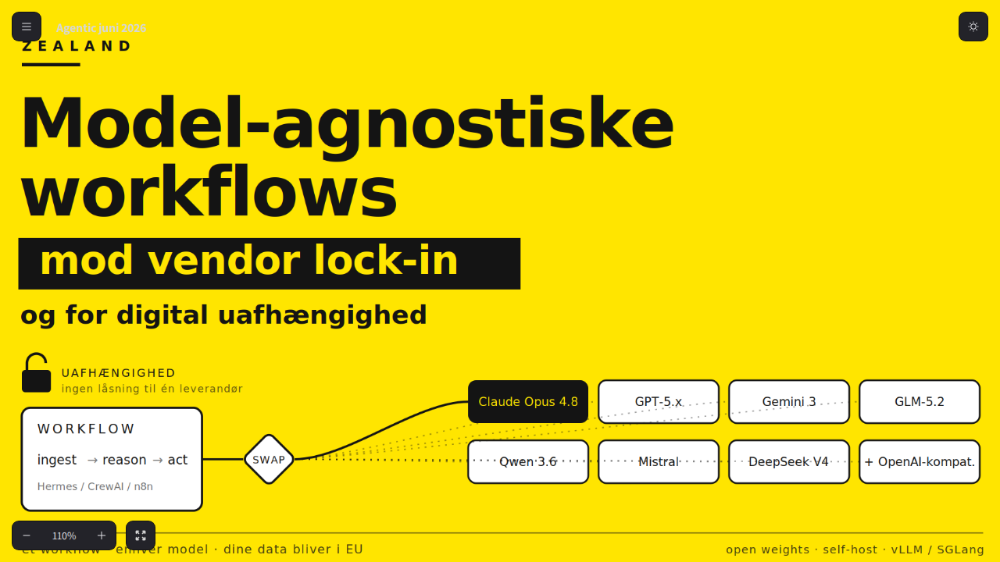

Agentic AI without lock-in
A current talk about the leap from chatbot to acting agent: what agents can actually perform, when they fail, and why persistent runtime, tool access and human supervision change the organization's AI practice.
With concrete examples from OpenClaw, Hermes, CrewAI, n8n, local models and EU hosting, the presentation shows how to build a responsible AI stack with attention to security, GDPR, learning, economics and the risk of vendor lock-in.
